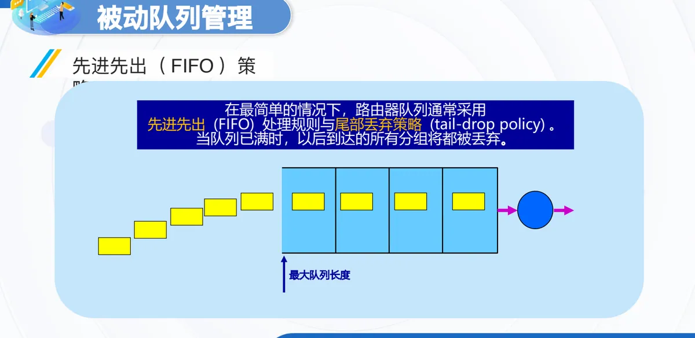
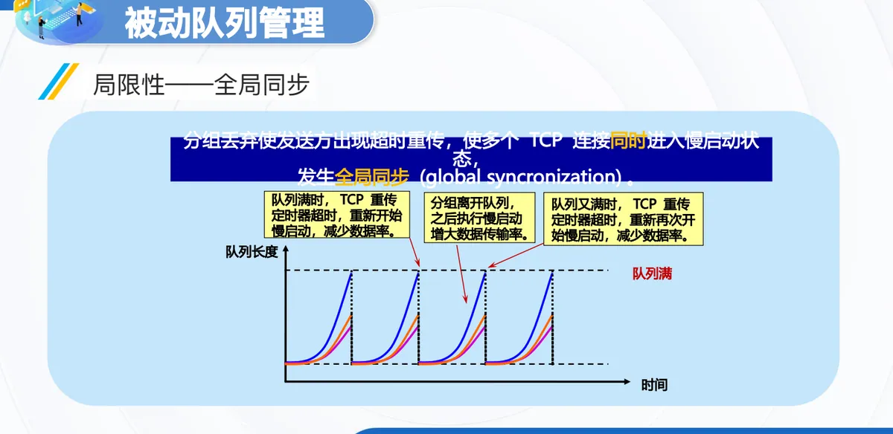
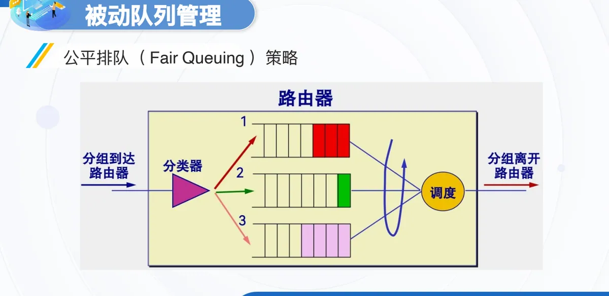
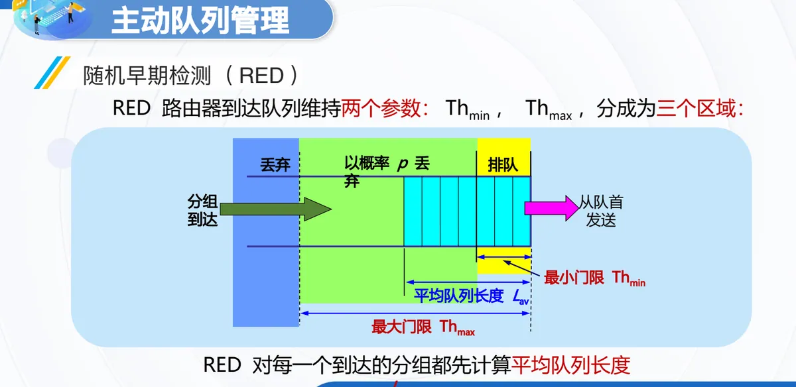
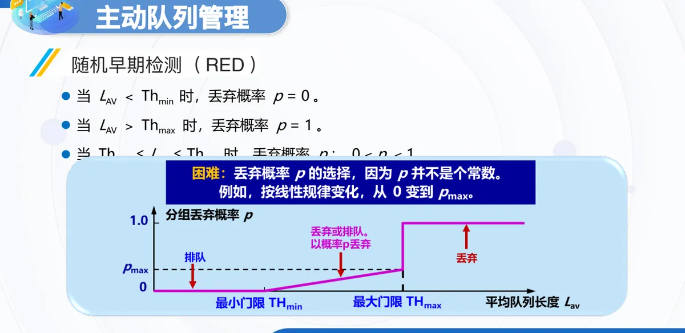
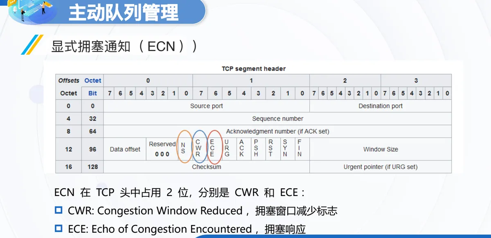

计算机通信与网络 · 第二版讲义 · 第 6 章 网络中的拥塞控制
6.3 路由器上的分组排队规则
分组在路由器上等待发送的这段时间，决定了拥塞是被悄悄加剧还是被及时抑制。本节先看路由器怎样转发分组、队列为什么会形成，再把排队规则分成两条路线：被动队列管理等队列满了才丢包，主动队列管理在拥塞刚露出苗头时就动手。
1. 路由器与分组排队
路由器工作在网络层，用于互连网络，是互联网中的关键设备。它的主要工作是转发分组：把从某个输入端口收到的分组，按照分组要去的目的地（即目的网络），从某个合适的输出端口转发给下一跳路由器。
转发中有一个绕不开的环节：不同输入端口进来的分组可能都要从同一个输出端口发出去，而输出端口的发送速率有限，它们只能排队等待。队列按什么顺序发送、排满后丢弃谁、要不要在队列没满时就先丢一部分，这组规定就是路由器上的分组排队规则，也是 6.2 节所讲拥塞控制方法中落在路由器一侧的那一类措施。
2. 被动队列管理与主动队列管理
排队规则分两条路线。被动队列管理是等队列排满才丢包的一类，包括先进先出 FIFO（First In First Out）与公平排队（Fair Queuing）。主动队列管理 AQM（Active Queue Management）不等队列满就动手：它把「队列正在变长」当作拥塞的征兆，提前丢弃少量分组提醒发送方，包括 DECbit 算法、随机早期检测 RED（Random Early Detection）与显式拥塞通知 ECN（Explicit Congestion Notification）。
3. 先进先出与尾部丢弃
最简单也最常见的路由器队列采用先进先出 FIFO 处理规则：分组按到达先后排队，从队首依次发送。与它配套的是尾部丢弃策略（tail-drop policy）：当队列已满时，以后到达的所有分组（如果能够继续排队，这些分组都将排在队列的尾部）将都被丢弃。队列能容纳的分组数由最大队列长度决定。

代价不只是丢掉的那几个分组：队列满时被丢弃的往往是一连串分组，发送方收不到确认就会超时重传，而 TCP 判定超时后便进入拥塞控制的慢开始（慢启动）状态，把发送速率突然降到很小的数值（详见 6.4 节与第一版讲义 5.5 TCP的拥塞控制）。拥塞信号只在队列排满时才发出，发送方的反应又过于剧烈，链路传输率随之大起大落。
4. 全局同步：尾部丢弃的固有局限
尾部丢弃还有更麻烦的后果：丢包时不区分分组属于哪个 TCP 连接，只要队列满了，所有到达的分组都被丢弃。多个连接于是同时超时、同时开始慢开始，速率一起下降，这种现象称为全局同步（global synchronization），它在队列长度上表现为周期性起伏：队列满时一起超时降速，分组离开队列后传输率又增大，队列再次变满又一起降速。链路一会儿空闲、一会儿拥塞，利用率被这种振荡拖了下来；只靠「满了就丢」，缺少的是提前一点、温和一点的调节手段。

5. 公平排队
被动队列管理的另一种做法是公平排队（Fair Queuing）：为每个数据流维护独立的虚拟队列，输出端口在各队列之间轮流取分组发送。这次该发谁，依据是虚拟时间戳（Virtual Finish Time）——为每个到达的分组计算完成时间戳 F = max(当前时间, 上一个分组的 F) + 分组长度/流权重，发送时优先选择时间戳最小的分组。公式里的「分组长度/流权重」决定各流的服务速率：权重大的流分到的带宽份额更大。

好处是每个流都有机会发送，防止带宽独占；代价是实现复杂、需要维护的状态信息多，流一多管理成本就上去了。它还有两点局限：无法区分流的重要性，所有流按权重公平分配，无法优先处理关键业务（如紧急控制消息）；计算复杂度高，每个分组都要计算时间戳，在高速链路中会成为性能瓶颈。
6. 主动队列管理
既然等队列排满才丢包总归太晚，1998 年提出了主动队列管理 AQM。它的「主动」在于：不等队列长度达到最大值、不得不丢弃后面到达的分组时才反应，而是在队列长度达到某个值得警惕的数值、拥塞有了某些征兆时，就主动丢弃到达的分组，把消息提前送给发送方。AQM 可以有不同实现方法，其中曾流行多年的就是随机早期检测 RED。
7. 随机早期检测 RED
RED 路由器在队列上维持两个参数：队列长度最小门限 THmin 与最大门限 THmax。RED 对每一个到达的分组都先计算平均队列长度 LAV，再与两个门限比较：小于最小门限时把分组放入队列排队；超过最大门限时把分组丢弃；介于两个门限之间时按某一概率 p 将它丢弃。换成丢弃概率来说，就是 LAV 小于 Thmin 时 p = 0，LAV 大于 Thmax 时 p = 1，位于两个门限之间时 p 在 0 与 1 之间。用平均队列长度而不是瞬时长度判断，是为了不被短暂的突发流量牵着走。


RED 的局限也很清楚：参数敏感，阈值与概率需要人工调优；无响应流问题，对丢包不作反应的流不受抑制，恶意流尤其如此；性能波动，流量突发时效果不稳定。
8. DECbit：早期显式反馈机制
在丢包之外还有一条思路：把拥塞直接告诉发送方。DECbit 算法就是这样的早期显式反馈机制：路由器检测拥塞，判据是输出端口的平均队列长度达到或超过 1 个分组；一旦判定拥塞，就在数据包头部设置 1 比特的拥塞位，由接收端通过 ACK 回传，发送端再根据收到的拥塞比例调整自己的窗口。
「早期」体现在阈值取 1 这个很小的数值上。在每个固定的计算周期结束时（比如，上一个数据包离开到下一个数据包离开的这段时间），路由器计算该周期的平均队列长度；当它达到或超过 1 时，说明数据包到达的速率开始持续超过路由器转发出去的速率，队列正在形成并可能增长，这就是拥塞开始的早期信号。阈值取 1 而不是等队列满了（比如达到 50）才报警，是给发送端一个提前的、温和的警告，让它在下游路由器还没被塞满、开始丢包之前就主动降速，避免更严重的拥塞和全局同步问题。DECbit 的优点是拥塞前提前通知、避免丢包，而且开销低；缺点是只支持特定协议（需要协议能识别这一位），并且阈值固定、适应性差。
9. 显式拥塞通知 ECN
沿着显式通知这条路再往前走，就是显式拥塞通知 ECN：路由器在出现拥塞时通知 TCP。当 TCP 段传递时，路由器使用 IP 首部中的 2 位记录拥塞；TCP 段到达后，接收方知道报文段是否在某个位置经历过拥塞，于是用下一个 ACK 通知发送方有拥塞发生，发送方做出响应，缩小自己的拥塞窗口。整个过程不必丢弃任何数据包，这正是 ECN 比尾部丢弃乃至 RED 更温和的地方。

在 TCP 一侧，ECN 占用的 2 位分别是 CWR 与 ECE：CWR 表示发送方已经把拥塞窗口减小，ECE 由接收方用来把「经历过拥塞」回送给发送方。两处标记分工不同：路由器在 IP 首部标记，接收方用 TCP 首部的这两位把信息带回发送方。ECN 的特点可以概括为三条：零丢包通知，拥塞时不丢弃数据包；精准控制，支持量化拥塞程度；标准化协议，由 RFC 3168 定义，兼容现代网络。局限同样明显：部署依赖，需要路由器与终端都支持；复杂实现，需要修改 IP/TCP 协议栈；安全风险，可能被恶意节点忽略或伪造。
本节小结
- 路由器工作在网络层，主要工作是转发分组：按分组要去的目的网络，从合适的输出端口把它交给下一跳路由器；多个输入端口争用同一个输出端口时，分组就在输出端口排队；
- 排队规则分两条路线：被动队列管理等队列满了才丢包，包括先进先出 FIFO 与公平排队；主动队列管理在队列长度出现危险征兆时就主动丢弃少量分组，包括 DECbit 算法、RED 与 ECN；
- 先进先出配合尾部丢弃策略最简单，但队列满时成串丢包会引起超时重传、使 TCP 进入慢开始；又因为丢包不区分连接，多个 TCP 连接同时超时、同时慢开始，形成全局同步，队列长度周期性振荡；
- 公平排队为每个流维护独立虚拟队列，按虚拟时间戳 F = max(当前时间, 上一个分组的 F) + 分组长度/流权重 优先发送时间戳最小的分组，能防止带宽独占，代价是状态多、成本高，且无法区分流的重要性、高速链路上计算开销大；
- RED 用平均队列长度与最小门限 THmin、最大门限 THmax 把队列状态分成三区，按概率丢包以提前通知，但参数敏感、无响应流不受抑制、突发流量下性能波动；DECbit 以平均队列长度达到 1 为阈值，用 1 比特拥塞位经 ACK 回传；ECN 在 IP 首部标记、用 TCP 首部的 CWR 与 ECE 两位回送，做到零丢包通知，代价是需端到端支持、要改协议栈，并可能被恶意节点忽略或伪造。